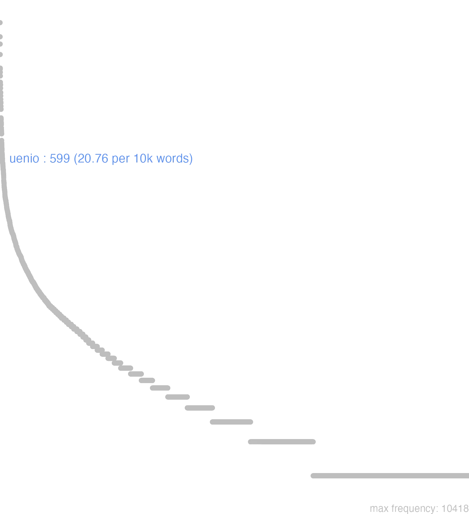

181 uenio
181.0.0.1 bases lexicais
id: http://lila-erc.eu/data/id/lemma/129790
classe: verbo
paradigma: 4ª conjugação (tema em -ī- longo)
outras grafias:
variantes do lema:
uenio presente | indicativo | 1ª pessoa singular | voz ativa
uenire presente | infinitivo | ativo
ueniet futuro | indicativo | 3ª pessoa singular | voz ativa
ueni pretérito perfeito | indicativo | 1ª pessoa singular | voz ativa
uentum particípio passado | nominativo neutro singular
uenturum particípio futuro | nominativo neutro singular
vĕnĭō
venīs
venīre
vēnī
181.0.0.2 dicionários tradicionais
vēnī
perf. de venĭo.
venĭō -īs -īre vēnī. ventum
v. intr.
Obs.: Imperf.: venibat Ter. Phorm. 652; gen. pl. do part. pres.: venientum Verg. En. 1, 434.
impess. de venĭo:
perf. de venĭo.
venĭō -īs -īre vēnī. ventum
v. intr.
Obs.: Imperf.: venibat Ter. Phorm. 652; gen. pl. do part. pres.: venientum Verg. En. 1, 434.
1 I-Sent. próprio Vir, chegar Cíc. At. 5, 12, 1; Cic. Clu. 93; Plaut. Bae. 631; Cés. B. Gal. 7, 66, 2; Cíc. Mare. 25.
2 I-Daí: Vir sobre, avançar, chegar a, cair sobre Cíc. Of. 1, 113; Cés. B. Civ. 1, 17, 2.
3 I-Donde: Apresentar-se, mostrar-se Cíc. Fin. 1, 24.
4 II-Sent. figurado: Provir, nascer, crescer Quint. 2, 4, 4; Verg. G. 1, 54.
5 II-Sent. figurado: Incorrer em, cair em, suportar, sofrer Cés. B. Civ. 2, 32, 4; Cés. B. Gal. 3, 17, 5.
6 II-Sent. figurado: Impess.: Vir ao espírito, chegar-se a Cíc. Br. 139.
impess. de venĭo:
1 «chegou-se».
Vĕnĭo -īs vēnī vēntŭm -īrĕ
v. intrans.
v. intrans.
1 ir;
1 vir por agua, abordar, abicar, aportar;
1 vir voando;
1 vir, chegar;
1 voltar, tornar;
2 Venire contra. atacar, aggredir fig.;
2 avançar, accommetter, atacar, aggredir, vir, cair sobre, dar sobre;
3 cair, tombar;
3 correr um liquido;
3 romper com respeito á luz;
4 nascer um astro, o dia, levantar-se o vento;
4 vir;
5 abrolhar;
5 crescer, brotar;
6 apresentar-se aos olhos, dar na vista;
6 chegar um arremessão;
6 chegar um som, um ruído;
6 ser trazido com respeito ás coisas;
6 vir o mar, o ar;
7 Fig. vir, chegar com respeito ás pessoas e ás coisas;
7 vir, nascer um sentimento;
8 succeder, acontecer, dar-se, sobrevir;
8 vir o tempo;
9 provir;
9 ser o producto d’uma operação arithmetica;
10 ser designado pela sorte, cair em sorte, caber por sorte;
10 sêr devolvido;
11 convir a;
11 ser admittido a;
12 cair em;
12 estar exposto, correr risco, perigo, supportar, aturar, soffrer;
12 ser objecto de;
13 passar a formula de transição;
13 tornar-se usado, passar em proverbio;
13 vir, chegar a ter este ou aquelle sentimento;
13 vir, chegar a;
13 voltar ao assumpto;
14 sêr;
15 vir ao espirito.
15 Unip. vir-se a;
[EXEMPLOS]
1
cælo uenere uolantes Virg Ellas as pombas desceram dos ares
huc uenit cornix Ov A gralha veiu pousar aqui
iamque uentum haud procul mari Tac Estava-se já proximo ao mar
nostra nauis huc uenit Plaut O nosso navio chegou aqui
si illo ueneris Cic Se fores alli
ubi eo uentum est Caes Apenas se chegou alli
uenire ad urbem Cic Chegar a Roma;
uenire auxilio Atticis Nep Vir em soccorro dos Athenienses
uenire cœnam ad aliquem Plaut Vir jantar com alguem
uenire Delum Cic Aportar a Delos
uenire gressu languido Phaed Caminhar com passo vagaroso, andar preguiçosamente
uenire in Cariam Cic Chegar á Caria
uenire in conspectu Phaed Apresentar-se diante de alguem
uenire in conspectum Nep Apresentar-se diante de alguem
uenire in patriam uoluit Phaed Quiz tornar á patria por mar
uenire in portum Ov Entrar no porto
uenire in uitam Cic Vir ao mundo, sêr dado á luz, nascer
uenire Oaxem Virg Ir para as margens do Oaxes
uenire oratum Liv Vir rogar;
uenire populare Virg vir assolar
uenire speculari Caes vir observar;
uenire uiam tot dierum Cic Fazer uma viagem tão longa
uenitur Lilybæum Cic Chegou-se a Lilybeu
uir mihi rure uenit Prop Meu marido volta do campo
2
aquila ueniente Virg Quando a aguia cae sobre as pombas
se satis ambobus uenire Virg Que elle só basta para ambos
uenire ad confligendum Lucr Avançar para combater
uenire contra alienum Cic Pleitear contra um estrangeiro
uenire contra amici existimationem Cic Fazer mal á reputação d’um amigo
uenire contra iniuriam Cic Oppor-se a uma injustiça
uenire contra rem alicuius Cic Prejudicar os interesses de alguem
3
aqua quæ a cælo uenit Varr Agua que cae do ceu, chuva
uenire ad terram Virg Cair ao chão de cima d’uma torre
uenit fulmen Ov Cae o raio
uenit lumen ab… Ov A luz rompe de…
ueniunt lacrimæ Ov Correm as lagrimas
4
ueniens aurora Virg A aurora que nasce
ueniente die Virg Ao romper do dia
uenientis sibilus Austri Virg O primeiro sibilar do vento Austro
uenit Hesperus Virg Nasce a estrella da tarde
5
aliæ sponte sua ueniunt Virg Umas arvores dão-se espontaneamente
hic segetes illic ueniunt uuæ Virg Aqui crescem as searas, alli as uvas
6
aer per patefacta uenit foramina Lucr O ar introduz-se pelas aberturas
clamor in astra uenit Ov O grito eleva-se aos ares
dum tibi meæ litteræ ueniant Cic Até que te chegue á mão a minha carta
frumentum Tiberi uenit Liv O trigo veiu pelo Tibre
per ilia uenit arundo Virg A flecha varou-lhe as ilhargas
quæ sub aspectum ueniunt Cic Os objectos que ferem a vista, os objectos visiveis
sinopis quæ ex Africa uenit Plin A terra de Sinope que vem da Africa
ueniet mihi fama Virg Chegar-me-há a nova
uenire ad nostras acies Lucr Vir dar em nossa vista uma imagem reflectida
uenit medio ui pontus Virg O mar furioso atravessou este espaço
uox mihi uenit ad aures Plaut Uma voz bateu-me nos ouvidos
ut noua uenit epistola Ov Logo que chegou nova carta
7
ad quem dolor ueniat Cic O que está sujeito á dor
caco debita pœna uenit Ov Caco padece o castigo que merece
canibus rabies uenit Virg A raiva vem aos cães
maius ne ueniat malum Phaed Para que não venha mal maior
quando extrema conclusio uenit Quint Quando a phrase está inteiramente acabada
tarda uenit dictis fides Ov Levou muito tempo que se desse credito ás suas palavras
uenire ad extremum Cic Chegar ao fim d’um discurso
uenire ad summum Cic Tocar o mais alto grau
uenire in buccam Ved. Bucca
uenire in mentem Ved. mens
uenire in ora Ved. os
uenit amor carminum ei Tac Veiu-lhe o gosto aos versos
uenitur ad usque decem Cic Chega-se até dez contando
uides quo uenturum me puto Cic Vês a que eu penso chegar
8
anni uenientes Hor Os tenros annos os annos que vão em crescimento
priori Remo augurium uenisse fertur Liv Diz-se que o primeiro agouro fôra favoravel a Remo
quæ deinde uenerunt Liv Os acontecimentos que se succederam
quod uenit ex facili Ov O que se faz sem trabalho
si quando similis fortuna ueniret Liv Se se desse o mesmo acontecimento
tempus ueniet quum… Virg Tempo virá, em que…
ubi ea dies uenit Caes Logo que chegou este dia
ueniens æuum Hor Os seculos vindouros, os tempos que hão de vir, o futuro
ueniens annus Cic. Virg O anno que vem
ueniens fama Virg A futura gloria
uenit arboribusque satisque lues Virg Deu a peste nos pomares e nos campos
uenit in artus liuor Ov Tornou-se livido o corpo
9
hinc uaria uenere artes Virg D’aqui nasceram varias artes
non omne argumentum undique uenit Quint Não é de toda a parte que veem os argumentos
uenit a gestu decor Quint A bellesa da acção oratoria vem do gesto
uenit inde celeritas percipiendi Quint D’aqui vem a promptidão da concepção
ueniunt mille passus Colum Há mil passos
uitium quod ex inopia uenit Quint De feito que provem de esterilidade do espirito
10
cui prætori classis uenisset Liv A que pretor teria caido por sorte o commando da armada
equus non tibi hereditate uenit Cic Este cavallo não te coube por herança
maior hereditas uenit unicuique uestrum Cic Cada um de vós tem maior herança
ptolemæo Ægyptus sorte uenit Just O Egypto coube por sorte a Ptolemeu
11
nullus non in orationem uenit Quint Muitos d’estes pés rhythmicos conveem á prosa
uenire in amicitiam Germanis Caes Entrar na amisade dos Germanos
uenire in partem doloris Ov Partilhar a dôr
uenire in partem impensæ Cic Concorrer para a despesa
uenire in possessionem Cic Entrar, metter-se de posse
uenire in sacerdotium Cic Entrar em um collegio de sacerdotes, ser feito sacerdote
uenire in societatem laudum tuarum Cic Associar-me á tua gloria
12
uenerat in eam opinionem Cassius, ut… Cic Cassio tinha dado a crer que…
uenire in æstimationem Liv Sêr apreçado, ser posto a preço
uenire in calamitatem Cic Cair em uma desgraça
uenire in cognitionem senatûs Quint Ser da alçada do senado, ser julgado pelo senado
uenire in contemptionem alicui Caes Tornar-se objecto de odio para alguem, grangear o despreso de alguem
uenire in controuersiam Quint Entrar em questão; ser discutido
uenire in crimen Ter Ser accusado
uenire in dubium Cic Ser posto em duvida
uenire in eam turpitudinem ut… Cic Passar pela vergonha de…
uenire in fidem Liv Render-se, entregar-se
uenire in odium alicui Cic Tornar-se objecto de odio para alguem, grangear o despreso de alguem
uenire in periculum Caes Correr perigo
uenire in potestatem alicuius Caes. Liv Cair no poder de alguem
uenire in quæstionem Quint Entrar em questão; ser discutido
uenire in religionem populo Cic Incutir no povo um escrupulo religioso
uenire in summum cruciatum Caes Passar pelos mais crueis tormentos
uenire in suspicionem alicui… Lentul. ad Cic Ser suspeitado por alguem…
13
ad tormenta seruorum ueniri oportet Ulp É mister que os escravos sejam postos a tractos
nonnunquam res ad manus ueniebat Cic Algumas vezes chegavam ás unhas em um festim
pugna ad gladios uenit Liv A peleja tornou-se de espada;
pugna ad pedites uenit Liv a acção tornou-se um combate de infanteria
respub. uenit in religionem, ut senatus… Liv A republica concebeu o escrupulo religioso, que o senado…
ueni in eum sermonem ut dicerem… Cic Cheguei a dizer…
uenio ad uerum ordinem Tac Volto á ordem dos factos
uenio nunc ad… Cic Agora passo a…
uenire ad nihilum Cic Ser anniquilado
uenire in certamen Cic Ter uma contenda, uma disputa
uenire in consuetudinem Cic Tornar-se habitual
uenire in consuetudinem uitæ… Caes Habituar-se ao modo de viver…
uenire in laudem Quint Ser elogiado
uenire in morem Liv Passar a ser usado
uenire in prouerbium Cic Tornar-se proverbio
uenire in spem… Caes Ter esperança que…
uenire in usum Plin Passar a ser usado
uenire summam in spem obtinendi regni Caes Ter summa esperança de chegar ao supremo poder
ut ad fabulas ueniamus Cic Para chegar ás peças theatraes
14
an deus immensi uenias maris Virg Se por ventura virás a ser o deus do vasto mar
gratior ueniens uirtus… Virg O merecimento que é mais apreciado…
quæ conscia uenis Ov Tu que es cumplice
15
mihi in suspicionem uenit Nep Tive suspeita…
nec uenit in mentem… Virg Nem te vem ao pensamento…
quum uenit in mentem solis lunæque uiarum Lucr Quando se pensa no curso do sol e da lua
si ueniat in dubium… Quint Se houver duvida…
uenit in contentionem, utrum… Cic Foi discutido, se…
uenit in religionem… Liv Houve um escrúpulo que…
utrisque uenit in opinionem… Nep Uns e outros se persuadiram…
Venio -is -eni -entum -ire
1 Cic. vir, chegar.
2 ser trazido, ser levado.
3 acontecer, succeder.
[EXEMPLOS]
X
haereditas mihi uenit a patre Cic Tive huma herança de meu pai
uenire ad manus Cic Brigar, vir ás mãos
uenire in confessum Plin. Jun Ser evidente
uenire in crimen Ter Ser culpado
uenire in discrimen existimationis Cic Arriscar a reputaçaõ
uenire in sermonem Cic Dar que fallar de si. Póde-se explicar de outros modos segundo os subst. á que se ajunta
uenire in uitam Cic Nascer
venio Venio -is
1 vir, ou chegar Neutr.
[EXEMPLOS]
X
alicui uenire auxilio favorecer a alguem
arbores, & similia uenire crescer pro Crescere
uenit mihi in mentem huius rei dicimus eleganter occorre-me, ou lembro-me desta cousa pro haec res
Venio is ueni uentum
1 vir. ou ir
181.0.0.3 dados de corpus
![This chart plots collocate by scoreSUBST, for the headword uenio here are all the values plotted: collocate: Roma; scoreSUBST: 0. collocate: castra; scoreSUBST: 2. collocate: ea; scoreSUBST: 0. collocate: ad; scoreSUBST: 0. collocate: cum; scoreSUBST: 0. collocate: senatus; scoreSUBST: 2. collocate: iudicium; scoreSUBST: 2. collocate: Gallia; scoreSUBST: 0. collocate: licinius; scoreSUBST: 0. collocate: nos; scoreSUBST: 0. collocate: exercitus; scoreSUBST: 2. collocate: praetor; scoreSUBST: 2. collocate: nunc; scoreSUBST: 0. collocate: et; scoreSUBST: 0. collocate: nox; scoreSUBST: 2. collocate: non; scoreSUBST: 0. collocate: locus; scoreSUBST: 1. collocate: dies; scoreSUBST: 1. collocate: ante2; scoreSUBST: 0. collocate: legatus; scoreSUBST: 2. collocate: Laodicea; scoreSUBST: 0. collocate: domus; scoreSUBST: 2. collocate: Treuiri; scoreSUBST: 0. collocate: Iesus; scoreSUBST: 0. collocate: Athenae; scoreSUBST: 0. collocate: quacumque; scoreSUBST: 0. collocate: nuntius; scoreSUBST: 2. collocate: unde; scoreSUBST: 0. collocate: hinc; scoreSUBST: 0. collocate: et2; scoreSUBST: 0](./Media/wordcloud__xx117-101-110-105-111xx__BY_collocate_scoreSUBST.webp)
![This chart plots collocate by scoreADJ, for the headword uenio here are all the values plotted: collocate: Roma; scoreADJ: 0. collocate: castra; scoreADJ: 0. collocate: ea; scoreADJ: 0. collocate: ad; scoreADJ: 0. collocate: cum; scoreADJ: 0. collocate: senatus; scoreADJ: 0. collocate: iudicium; scoreADJ: 0. collocate: Gallia; scoreADJ: 0. collocate: licinius; scoreADJ: 2. collocate: nos; scoreADJ: 0. collocate: exercitus; scoreADJ: 0. collocate: praetor; scoreADJ: 0. collocate: nunc; scoreADJ: 0. collocate: et; scoreADJ: 0. collocate: nox; scoreADJ: 0. collocate: non; scoreADJ: 0. collocate: locus; scoreADJ: 0. collocate: dies; scoreADJ: 0. collocate: ante2; scoreADJ: 0. collocate: legatus; scoreADJ: 0. collocate: Laodicea; scoreADJ: 0. collocate: domus; scoreADJ: 0. collocate: Treuiri; scoreADJ: 0. collocate: Iesus; scoreADJ: 0. collocate: Athenae; scoreADJ: 0. collocate: quacumque; scoreADJ: 0. collocate: nuntius; scoreADJ: 0. collocate: unde; scoreADJ: 0. collocate: hinc; scoreADJ: 0. collocate: et2; scoreADJ: 0](./Media/wordcloud__xx117-101-110-105-111xx__BY_collocate_scoreADJ.webp)
![This chart plots collocate by scoreVERBO, for the headword uenio here are all the values plotted: collocate: Roma; scoreVERBO: 0. collocate: castra; scoreVERBO: 0. collocate: ea; scoreVERBO: 0. collocate: ad; scoreVERBO: 0. collocate: cum; scoreVERBO: 0. collocate: senatus; scoreVERBO: 0. collocate: iudicium; scoreVERBO: 0. collocate: Gallia; scoreVERBO: 0. collocate: licinius; scoreVERBO: 0. collocate: nos; scoreVERBO: 0. collocate: exercitus; scoreVERBO: 0. collocate: praetor; scoreVERBO: 0. collocate: nunc; scoreVERBO: 0. collocate: et; scoreVERBO: 0. collocate: nox; scoreVERBO: 0. collocate: non; scoreVERBO: 0. collocate: locus; scoreVERBO: 0. collocate: dies; scoreVERBO: 0. collocate: ante2; scoreVERBO: 0. collocate: legatus; scoreVERBO: 0. collocate: Laodicea; scoreVERBO: 0. collocate: domus; scoreVERBO: 0. collocate: Treuiri; scoreVERBO: 0. collocate: Iesus; scoreVERBO: 0. collocate: Athenae; scoreVERBO: 0. collocate: quacumque; scoreVERBO: 0. collocate: nuntius; scoreVERBO: 0. collocate: unde; scoreVERBO: 0. collocate: hinc; scoreVERBO: 0. collocate: et2; scoreVERBO: 0](./Media/wordcloud__xx117-101-110-105-111xx__BY_collocate_scoreVERBO.webp)
![This chart plots collocate by scoreADV, for the headword uenio here are all the values plotted: collocate: Roma; scoreADV: 0. collocate: castra; scoreADV: 0. collocate: ea; scoreADV: 2. collocate: ad; scoreADV: 0. collocate: cum; scoreADV: 0. collocate: senatus; scoreADV: 0. collocate: iudicium; scoreADV: 0. collocate: Gallia; scoreADV: 0. collocate: licinius; scoreADV: 0. collocate: nos; scoreADV: 0. collocate: exercitus; scoreADV: 0. collocate: praetor; scoreADV: 0. collocate: nunc; scoreADV: 2. collocate: et; scoreADV: 0. collocate: nox; scoreADV: 0. collocate: non; scoreADV: 1. collocate: locus; scoreADV: 0. collocate: dies; scoreADV: 0. collocate: ante2; scoreADV: 2. collocate: legatus; scoreADV: 0. collocate: Laodicea; scoreADV: 0. collocate: domus; scoreADV: 0. collocate: Treuiri; scoreADV: 0. collocate: Iesus; scoreADV: 0. collocate: Athenae; scoreADV: 0. collocate: quacumque; scoreADV: 2. collocate: nuntius; scoreADV: 0. collocate: unde; scoreADV: 2. collocate: hinc; scoreADV: 2. collocate: et2; scoreADV: 2](./Media/wordcloud__xx117-101-110-105-111xx__BY_collocate_scoreADV.webp)
![This chart plots collocate by scoreFUNC, for the headword uenio here are all the values plotted: collocate: Roma; scoreFUNC: 0. collocate: castra; scoreFUNC: 0. collocate: ea; scoreFUNC: 0. collocate: ad; scoreFUNC: 20. collocate: cum; scoreFUNC: 20. collocate: senatus; scoreFUNC: 0. collocate: iudicium; scoreFUNC: 0. collocate: Gallia; scoreFUNC: 0. collocate: licinius; scoreFUNC: 0. collocate: nos; scoreFUNC: 0. collocate: exercitus; scoreFUNC: 0. collocate: praetor; scoreFUNC: 0. collocate: nunc; scoreFUNC: 0. collocate: et; scoreFUNC: 0. collocate: nox; scoreFUNC: 0. collocate: non; scoreFUNC: 0. collocate: locus; scoreFUNC: 0. collocate: dies; scoreFUNC: 0. collocate: ante2; scoreFUNC: 0. collocate: legatus; scoreFUNC: 0. collocate: Laodicea; scoreFUNC: 0. collocate: domus; scoreFUNC: 0. collocate: Treuiri; scoreFUNC: 0. collocate: Iesus; scoreFUNC: 0. collocate: Athenae; scoreFUNC: 0. collocate: quacumque; scoreFUNC: 0. collocate: nuntius; scoreFUNC: 0. collocate: unde; scoreFUNC: 0. collocate: hinc; scoreFUNC: 0. collocate: et2; scoreFUNC: 0](./Media/wordcloud__xx117-101-110-105-111xx__BY_collocate_scoreFUNC.webp)
![This charts plots the frequency of lemma by author_Frequencies. The Hieronymus subcorpus registers the highest normalized frequency, with the value of 83.13 and an absolute frequency of 37. The Caesar subcorpus follows, with a normalized frequency of 31.35 and an absolute frequency of 83. the subcorpus with the least normalized frequency is Suetonius with the normalized value of 0 and an absolute freqeuncy of 0. here are all the values: subcorpus: Caesar ; normalized frequency: 83 ; absolute frequency: 31.3467784575874. subcorpus: Cicero ; normalized frequency: 322 ; absolute frequency: 20.0593057735915. subcorpus: Horatius ; normalized frequency: 15 ; absolute frequency: 13.3203090311695. subcorpus: Ovidius ; normalized frequency: 6 ; absolute frequency: 10.2951269732327. subcorpus: Phaedrus ; normalized frequency: 16 ; absolute frequency: 24.2902687110976. subcorpus: Sallustius ; normalized frequency: 11 ; absolute frequency: 10.2031351451628. subcorpus: Seneca ; normalized frequency: 93 ; absolute frequency: 17.3568989007297. subcorpus: Suetonius ; normalized frequency: 0 ; absolute frequency: 0. subcorpus: Tacitus ; normalized frequency: 1 ; absolute frequency: 3.43288705801579. subcorpus: Vergilius ; normalized frequency: 15 ; absolute frequency: 28.957528957529. subcorpus: Hieronymus ; normalized frequency: 37 ; absolute frequency: 83.1273871040216](./Media/barchart__xx117-101-110-105-111xx__lemma_BY_author_Frequencies.webp)
![This charts plots the frequency of lemma by genre_Frequencies. The Prosa.ficcional subcorpus registers the highest normalized frequency, with the value of 83.13 and an absolute frequency of 37. The Prosa.epistolográfica subcorpus follows, with a normalized frequency of 37.36 and an absolute frequency of 141. the subcorpus with the least normalized frequency is Poesia.lírica with the normalized value of 14.3 and an absolute freqeuncy of 17. here are all the values: subcorpus: Prosa.histórica ; normalized frequency: 95 ; absolute frequency: 23.1261715231627. subcorpus: Prosa.filosófica ; normalized frequency: 90 ; absolute frequency: 14.8267738587503. subcorpus: Prosa.oratória ; normalized frequency: 166 ; absolute frequency: 15.9380910775494. subcorpus: Prosa.epistolográfica ; normalized frequency: 141 ; absolute frequency: 37.3618802829964. subcorpus: Poesia.lírica ; normalized frequency: 17 ; absolute frequency: 14.3013375956928. subcorpus: Poesia.didática ; normalized frequency: 20 ; absolute frequency: 16.9649673424379. subcorpus: Poesia.trágica ; normalized frequency: 18 ; absolute frequency: 15.6358582348853. subcorpus: Poesia.épica ; normalized frequency: 15 ; absolute frequency: 28.957528957529. subcorpus: Prosa.ficcional ; normalized frequency: 37 ; absolute frequency: 83.1273871040216](./Media/barchart__xx117-101-110-105-111xx__lemma_BY_genre_Frequencies.webp)
![This charts plots the frequency of lemma by period_Frequencies. The IV.d.C. subcorpus registers the highest normalized frequency, with the value of 83.13 and an absolute frequency of 37. The I.a.C. subcorpus follows, with a normalized frequency of 20.85 and an absolute frequency of 448. the subcorpus with the least normalized frequency is II.d.C. with the normalized value of 2.62 and an absolute freqeuncy of 1. here are all the values: subcorpus: I.a.C. ; normalized frequency: 448 ; absolute frequency: 20.8517570397952. subcorpus: I.d.C. ; normalized frequency: 113 ; absolute frequency: 17.286216919076. subcorpus: II.d.C. ; normalized frequency: 1 ; absolute frequency: 2.61780104712042. subcorpus: IV.d.C. ; normalized frequency: 37 ; absolute frequency: 83.1273871040216](./Media/barchart__xx117-101-110-105-111xx__lemma_BY_period_Frequencies.webp)
venit legi dies
Cic.Att.4.17.3
Chega o dia da lei. [JDD]
venisti perdere nos
Vulg.Marc.1.24
Vieste nos desgraçar? [JDD]
et veniunt ad domum
Vulg.Marc.3.20
E ele vêm para casa [JDD]
et veniunt ad Iesum
Vulg.Marc.5.15
e vêm até Jesus [JDD]
ueniet et uobis furor
Sen.Ag.1012
O furor também virá para vós. [JDD]
unde uenis et quo tendis
Hor.S.1.9.62
“De onde vens?” e “Para onde vais?” [JDD]
quam multa non expectata uenerunt
Sen.Ep.13.10
Quantos não esperados vieram! [JDD]
alius dicat fortasse non ueniet
Sen.Ep.13.14
Que outro diga: “Talvez não virá”. [JDD]
uenisti paulo ante in senatum
Cic.Catil.1.16.7
Chegaste um pouco antes ao senado. [JDD]
sexto die Delum Athenis venimus
Cic.Att.5.12.1
Em seis dias chegamos de Atenas a Delos. [JDD]
Laodiceam veni pridie Kal Sextilis
Cic.Att.5.15.1
Cheguei em Laodicéia na véspera das calendas de sextil [31 de julho]. [JDD, de outra edição]
felix ad aures nuntius uenit meas
Sen.Ag.397a
Feliz notícia chega aos meus ouvidos. [JDD]
Venit ecce dives et potens :
Phaed.3.5
Aí vem vindo um homem rico e poderoso. [JDD]
Unde hoc , amice ? venit
Phaed.3.7
“De onde é isso, amigo?” [JDD]
perbelle feceris si ad nos veneris
Cic.Att.4.4A.1
Farás muitíssimo bem, se vieres para junto de nós. [JDD]
non enim veni vocare iustos sed peccatores
Vulg.Marc.2.17
pois eu não vim chamar os justos, mas os pecadores. [JDD]
eo ut erat dictum ad conloquium uenerunt
Caes.Gal.1.43.2
Lá, como havia sido combinado, chegaram para a conversação. [JDD]
inde in castra veni a.d.VII Kalendas Septembris
Cic.Att.5.20.2
Dali cheguei no acampamento no sétimo dia antes das calendas de setembro [26 de agosto]. [JDD, de outra edição]
nihil esse quod in campum nocte veniretur
Cic.Att.4.3.4
não havia nenhum motivo para que se viesse ao Campo à noite. [JDD]
venient autem dies cum auferetur ab eis sponsus
Vulg.Marc.2.20
Dias virão, porém, em que o noivo será arrancado deles [JDD]
tum frequens senatus ad istum uenit pollicetur signum
Cic.Ver.2.4.87.8
Então o senado em grande número veio até esse sujeito, promete-lhe a estátua. [JDD]
interim a compluribus ciuitatibus ad eum legati ueniunt
Caes.Gal.4.18.3
Entrementes, chegam até ele legados de muitas cidades. [JDD]
venite seorsum in desertum locum et requiescite pusillum
Vulg.Marc.6.31
Vinde somente vós a um lugar deserto e descansai um pouco. [JDD]
cum illis tamen cum salvi venerint Romae vivere licebit
Cic.Att.4.15.2
Te será permitido, contudo, viver com eles em Roma, quando chegarem sãos e salvos. [JDD]
a tergo fronte lateribus tenebitur si in Galliam uenerit
Cic.Phil.3.32.6
Ele será detido pelas costas, por frente, pelos lados, se vier para a Gália. [JDD]
itaque illi obviam misimus Athenas ut inde Thessalonicam veniret
Cic.Att.3.8.1
Assim mandei buscá-lo em Atenas para que viesse dali para Tessalônica. [JDD]
mora et tergiuersatio dum hic ueniret locum relinquere noluit
Cic.Mil.54
Demora e subterfúgio: até que este chegasse, não quis abandonar o local. [JDD]
nunc venio ad eam epistulam quam accepi a Tullio
Cic.Att.5.4.2
Agora venho a essa carta que recebi de Túlio. [JDD]
eo cum uenio praetor quiescebat fratres illi Cibyratae inambulabant
Cic.Ver.2.4.32.13
Quando chego lá, o pretor estava descansando; aqueles irmãos cibiratas passeavam. [JDD]
ipse cum primum pabuli copia esse inciperet ad exercitum uenit
Caes.Gal.2.2.2
Ele próprio, assim que começava a haver abundância de pastagem, vem até o exército. [JDD]
Ad rivum eundem lupus et agnus venerant Siti compulsi ;
Phaed.1.1
A um mesmo rio tinham vindo um lobo e um cordeiro, compelidos pela sede. [JDD]
in nostra ille numquam ueniet multo minus nos in illius
Cic.Phil.12.28.3
No nosso ele nunca virá, muito menos nós no dele. [JDD]
potestas modo ueniendi in hunc locum sit dicendi periculum non recuso
Cic.Phil.1.14.3
Desde que haja a faculdade de vir a este local, não me furto ao perigo de falar. [JDD]
numquam huc venissent nisi ad alias res pestiferas aditus sibi compararent
Cic.Att.2.17.1
Nunca teriam chegado aqui se não tivessem preparado a passagem para outras coisas funestas. [JDD]
nam Germani qui auxilio ueniebant percepta Treuerorum fuga sese domum contulerunt
Caes.Gal.6.8.7
Pois os germanos, que vinham em auxílio, sabida a fuga dos tréveros, se recolheram para sua pátria. [JDD, de outra edição]
num quid igitur aliud in iudicium uenit nisi uter utri insidias fecerit
Cic.Mil.31
Por acaso, portanto, alguma outra coisa veio a julgamento, a não ser qual dos dois tinha preparado uma emboscada para o outro? [JDD]
tempore igitur ipso se ostenderunt cum Licinius uenisset pyxidem expediret manum porrigeret uenenum traderet
Cic.Cael.65
Portanto, eles se mostraram no momento exato em que Licínio tinha chegado, pegava a caixinha, estendia a mão, entregava o veneno. [JDD]
itaque propter hanc auaritiam imperatorum quantas calamitates quocumque uentum sit nostri exercitus adferant quis ignorat
Cic.Man.37
E assim quem ignora que grandes infortúnios os nossos exércitos ocasionam onde quer que se chega, por causa dessa cobiça dos generais? [JDD]
181.0.0.4 Diagrama de Zipf
